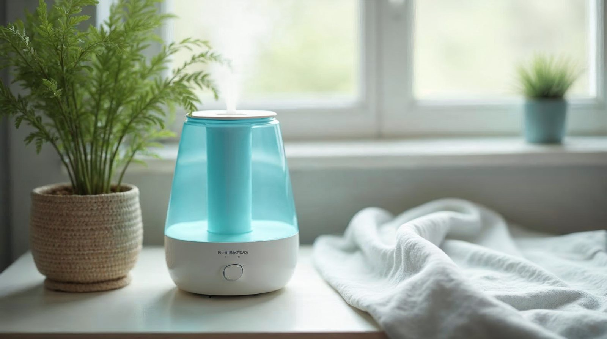
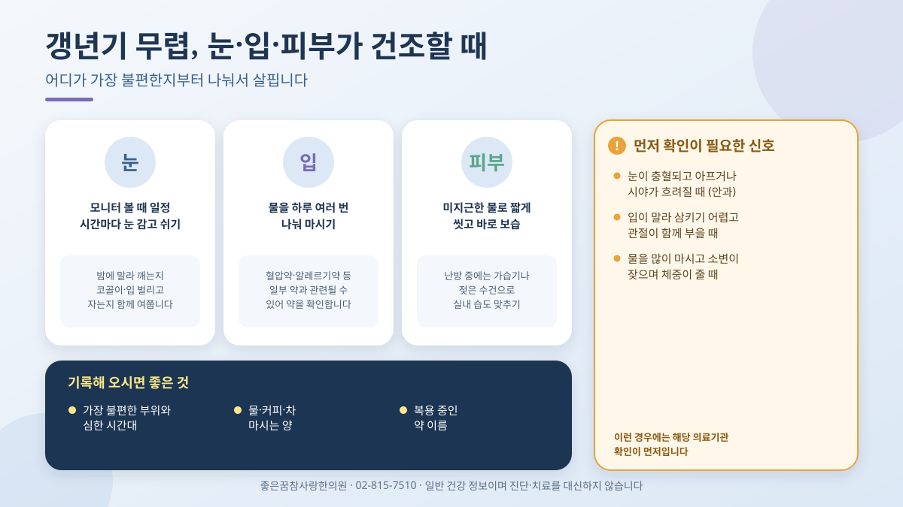

이종호 한의사 감수좋은꿈참사랑한의원 대표원장 (한의사 면허번호 19769)발행 2026-11-24 · 수정 2026-11-26
이 글의 차례
- 왜 이런 불편이 생길 수 있나요
- 갱년기 건조함과 다른 원인은 어떻게 나눠 볼까요?
- 일상에서 이런 때 더 심해질 수 있습니다
- 스스로 점검해 보세요
- 열감과 잠은 건조함과 어떻게 이어질까요?
- 먹고 마시는 것에서는 무엇을 볼까요?
- 먼저 이렇게 여쭙니다
- 일상에서 먼저 해 볼 수 있는 것
- 집에서 조금 더 자세히 해 보는 방법
- 피부가 가려울 때는 어떻게 하나요?
- 계절과 장소에 따라서도 달라질까요?
- 한의원에서 함께 살필 수 있는 경우
- 첫 진료에서는 무엇을 살피나요?
- 얼마나 지켜보고 언제 상담할까요?
- 하루를 이렇게 나눠 챙겨 보세요
- 가족이 함께 알아 두면 좋은 점
- 마음까지 지칠 때는 어떻게 할까요?
- 이렇게 기록해 오시면 상담이 쉬워집니다
- 이런 증상은 먼저 확인이 필요합니다
물을 나눠 마시고 실내 습도와 보습을 챙기는 생활 조절로 건조함을 덜 수 있지만, 복용 중인 약이나 잠 습관이 영향을 주는 경우도 있어 함께 살펴보는 것이 좋습니다. 50대에 들어서며 눈이 뻑뻑해 오후에는 모니터를 보기 힘들고, 밤에는 입이 말라 자주 깬다는 분이 있습니다.
건조함은 하나하나는 작은 불편 같아도 하루 종일 따라다니면 꽤 지칩니다. 오후마다 눈을 비비고, 밤에 물을 찾느라 깨고, 씻고 나면 온몸이 당기는 날이 이어지면 잠도 기분도 함께 가라앉기 쉽습니다.
그래서 저는 건조함을 '나이 탓'으로만 넘기지 않고, 언제 어디가 얼마나 마르는지부터 함께 적어 보자고 말씀드립니다. 같은 갱년기라도 사람마다 심한 곳과 심한 시간대가 다르기 때문입니다.
왜 이런 불편이 생길 수 있나요
- 나이가 들며 눈물과 침, 피부의 수분과 기름기가 줄어 건조함을 더 느끼는 분이 있습니다.
- 갱년기 무렵의 열감과 땀, 잠 깨는 증상이 겹치면 밤사이 입이 더 마르기도 합니다.
- 혈압약이나 알레르기약처럼 일부 약은 입 마름과 관련될 수 있어 복용 중인 약을 함께 확인합니다. 드시던 약은 처방한 의사와 상의 없이 줄이거나 끊지 마세요.
- 난방으로 건조한 실내와 오래 모니터를 보는 습관도 눈과 피부를 더 마르게 합니다.
갱년기 건조함과 다른 원인은 어떻게 나눠 볼까요?
갱년기 무렵의 건조함은 눈·입·피부가 비슷한 시기에 함께 마르고, 열감이나 잠 깨는 증상과 같이 오르내리는 경우가 많습니다. 한 곳만 유독 심하다면 그 부위의 다른 원인도 함께 생각해 봅니다.
예를 들어 눈만 뻑뻑하고 오후에 심하다면 모니터를 보는 시간과 깜빡임이 줄어든 습관을 먼저 봅니다. 렌즈를 오래 끼는 분이라면 착용 시간도 여쭙고, 안과 진료를 받은 적이 있는지 확인합니다.
입 마름이 밤에만 심하고 아침에 목이 칼칼하다면 입을 벌리고 자거나 코가 막혀 입으로 숨 쉬는 습관이 있는지 살핍니다. 낮에는 괜찮다면 잠자리 습도와 호흡 습관이 더 관련될 수 있습니다.
피부는 정강이와 팔 바깥쪽처럼 기름이 적은 곳부터 하얗게 일어나는 분이 많습니다. 뜨거운 물로 오래 씻거나 때를 자주 미는 습관이 있다면 그 습관부터 함께 돌아봅니다.
새로 먹기 시작한 약이 있은 뒤로 건조함이 시작됐다면 그 날짜를 적어 오세요. 약을 바꿀지는 처방한 의사와 의논할 일이라, 시점을 정리해 처방한 곳에 알리시도록 안내합니다.
일상에서 이런 때 더 심해질 수 있습니다
- 예를 들어 히터 바람이 얼굴 쪽으로 오는 자리에서 오후 내내 모니터를 보는 경우, 퇴근 무렵 눈이 가장 뻑뻑하다고 느끼기 쉽습니다.
- 예를 들어 저녁에 커피나 진한 차를 여러 잔 마시고 물은 거의 마시지 않는 경우, 밤사이 입 마름과 잦은 소변이 겹쳐 더 자주 깨기도 합니다.
- 예를 들어 열감이 올라 밤에 이불을 걷었다 덮었다 하는 경우, 땀이 식으면서 피부가 더 당기고 가려움이 심해지기도 합니다.
- 예를 들어 겨울철 뜨거운 탕에 오래 있고 때를 미는 경우, 다음 날 정강이와 등이 하얗게 일어나는 분이 있습니다.
스스로 점검해 보세요
- 눈·입·피부 가운데 두 곳 이상이 비슷한 시기부터 말랐다
- 오후나 밤이 되면 건조함이 더 심해진다
- 물보다 커피나 차를 더 많이 마신다
- 밤에 입이 말라 깨는 날이 일주일에 사흘을 넘는다
- 난방을 켠 채 실내 습도를 확인해 본 적이 없다
- 뜨거운 물로 오래 씻거나 때를 자주 민다
- 열감이나 땀, 잠 깨는 증상이 건조함과 함께 온다
- 최근 새로 먹기 시작한 약이 있다
해당하는 항목에 표시해 진료 때 보여 주시면, 생활에서 먼저 바꿀 것과 함께 살필 것을 나누어 정리하기 쉽습니다. 해당하는 항목이 적어도 불편이 크다면 그 자체로 상담 이유가 됩니다.
열감과 잠은 건조함과 어떻게 이어질까요?
갱년기 무렵에는 얼굴로 열이 확 오르고 땀이 났다가 식는 일이 하루에도 여러 번 생기는 분이 있습니다. 땀이 나고 식는 동안 피부의 수분도 함께 빠져나가 당기는 느낌이 커지기 쉽습니다.
밤에 열감으로 깨면 다시 잠들기까지 뒤척이는 시간이 길어지고, 그동안 입을 벌리고 숨 쉬면 입안이 더 마릅니다. 그래서 입 마름 때문에 깨는 것인지, 열감 때문에 깬 뒤 입이 마른 것인지를 나눠 여쭙습니다.
잠이 부족한 날에는 눈이 더 쉽게 피로해지고 뻑뻑함도 크게 느껴집니다. 건조함만 따로 보기보다 잠이 어땠는지와 함께 적어 두시면, 어떤 날 더 심한지 흐름이 보이기 쉽습니다.
먹고 마시는 것에서는 무엇을 볼까요?
커피와 진한 녹차는 소변을 늘려 몸의 수분이 빠져나가는 느낌을 키우는 분이 있습니다. 끊기보다 오후 이른 시간까지만 마시고, 한 잔을 마실 때 물도 한 컵 곁들여 보세요.
짜고 매운 음식을 저녁에 많이 먹으면 밤에 갈증이 나서 깨기 쉽습니다. 저녁은 간을 조금 싱겁게 하고, 국물보다 건더기 위주로 드셔 보세요.
술은 잠들 때는 졸리게 해도 밤사이 몸을 데우고 수분을 빼앗아 새벽에 입이 말라 깨게 만들 수 있습니다. 건조함이 심한 시기에는 술자리 횟수를 줄여 보시기를 권합니다.
물 대신 단 음료로 갈증을 달래면 오히려 입안이 끈적이고 더 마르게 느껴질 수 있습니다. 미지근한 물이나 보리차처럼 순한 것으로 바꿔 보세요.
먼저 이렇게 여쭙니다
- 눈, 입, 피부 가운데 어디가 가장 불편하신가요?
- 하루에 물은 얼마나 드시고, 커피나 차는 몇 잔 드시나요?
- 밤에 입이 말라 깨는 일이 있나요? 코를 골거나 입을 벌리고 주무시나요?
- 복용 중인 약(혈압약, 알레르기약, 수면제 등)이 있나요?
일상에서 먼저 해 볼 수 있는 것
- 물을 한 번에 많이 마시기보다 하루 여러 번 나눠 마시기
- 모니터를 볼 때 일정 시간마다 눈을 감고 쉬기
- 난방 중에는 가습기나 젖은 수건으로 실내 습도 맞추기
- 샤워는 미지근한 물로 짧게 하고 바로 보습제 바르기
집에서 조금 더 자세히 해 보는 방법
물은 아침에 일어나 한 컵, 오전과 오후에 한두 컵씩 시간을 정해 두면 잊지 않기 쉽습니다. 잠들기 직전에 많이 마시면 소변으로 깰 수 있어 저녁 식사 뒤에는 조금씩만 드세요.
실내 습도는 습도계를 하나 두고 숫자로 확인해 보시기를 권합니다. 가습기를 쓰신다면 물통을 자주 씻어 말리고, 얼굴 바로 앞보다 조금 떨어진 곳에 두세요.
모니터는 눈높이보다 조금 낮게 두면 눈을 덜 크게 뜨게 됩니다. 한 시간에 한 번쯤 창밖 먼 곳을 보며 천천히 눈을 깜빡여 주세요.
보습제는 샤워 뒤 몇 분 안에 정강이, 팔, 등처럼 잘 마르는 곳부터 바르세요. 향이 강한 제품보다 순한 제품이 덜 자극적이고, 손이 닿지 않는 등은 가족의 도움을 받으셔도 됩니다.
밤 입 마름이 심하다면 머리맡에 물 한 컵을 두고, 코가 막혀 입으로 숨 쉬지 않는지 살펴보세요. 식사 때 천천히 오래 씹는 습관도 입안을 덜 마르게 하는 데 도움이 될 수 있습니다.
피부가 가려울 때는 어떻게 하나요?
건조한 피부는 작은 자극에도 가렵고, 긁으면 더 마르고 거칠어지는 일이 되풀이되기 쉽습니다. 가려울 때는 긁기보다 차가운 물수건을 잠깐 대거나 보습제를 한 번 더 발라 보세요.
손톱은 짧게 다듬고, 잠자리에서는 피부에 닿는 옷을 부드러운 면으로 고르시면 밤에 무의식중에 긁는 일이 줄어들 수 있습니다. 모직이나 거친 옷감은 피부에 바로 닿지 않게 입어 주세요.
빨래할 때 세제가 옷에 많이 남으면 피부를 자극하기도 합니다. 헹굼을 한 번 더 하고 섬유유연제는 향이 약한 것을 써 보세요.
계절과 장소에 따라서도 달라질까요?
찬 바람이 불고 난방을 켜기 시작하는 늦가을부터 겨울까지 건조함이 더 심해지는 분이 많습니다. 반대로 여름에는 에어컨 바람을 오래 쐬는 사무실에서 눈과 입이 마르기도 합니다.
비행기나 장거리 버스처럼 공기가 건조한 곳에 오래 있으면 평소보다 더 당길 수 있습니다. 이동이 긴 날에는 작은 물병과 보습제를 챙겨 두세요.
계절이 바뀔 때마다 건조함이 언제 시작되고 언제 덜해지는지 달력에 한 줄씩 적어 두면, 다음 해에는 그 시기보다 조금 앞서 습도와 보습을 챙길 수 있습니다.

한의원에서 함께 살필 수 있는 경우
- 눈·입·피부 건조와 함께 열감이나 잠 깨는 증상이 겹치는 경우 몸 전체의 리듬을 함께 살핍니다.
- 밤에 입이 말라 자주 깨는 경우 잠의 모양과 호흡 습관을 함께 살핍니다.
- 건조함 때문에 가려움이 심해 잠을 설치는 경우 피부 상태와 잠을 함께 살핍니다.
좋은꿈참사랑한의원에서는 모든 분께 맥을 짚으며 월경 기록과 열감, 잠 같은 변화를 여쭙고, 필요하다고 판단될 때 설진·복진을 더해 몸 상태를 살핍니다. 침이나 한약 상담 등 상태에 맞는 방법을 정하며, 산부인과나 내과 검사가 먼저 필요한 부분은 함께 안내합니다.
첫 진료에서는 무엇을 살피나요?
첫 진료에서는 맥을 짚으며 어디가 가장 마르는지, 언제부터였는지를 여쭙습니다. 건조함은 열감, 땀, 잠, 소화, 대소변 변화와 함께 오는 경우가 많아 몸 전체의 리듬을 같이 봅니다.
마지막 월경이 언제였는지, 주기가 언제부터 흔들렸는지도 여쭙습니다. 갱년기 무렵의 변화가 어느 시기쯤인지 짐작하는 데 도움이 되기 때문입니다.
복용 중인 약과 영양제는 이름이 보이게 사진을 찍어 오시면 확인이 빠릅니다. 한약을 고려한다면 지금 드시는 약을 먼저 확인한 뒤 상의하고, 드시던 약은 그대로 두고 이야기합니다.
안과나 내과 확인이 먼저 필요해 보이면 그 진료를 함께 안내합니다. 다른 과 진료와 한의원 진료는 함께 받으셔도 되니, 이미 받고 계신 진료가 있다면 알려 주세요.
진찰 뒤에는 생활에서 먼저 바꿀 것 한두 가지와, 침이나 한약 상담처럼 함께 살필 방법을 나누어 말씀드립니다. 무엇을 왜 하는지 먼저 설명드리고, 궁금한 점은 그 자리에서 편하게 물어보시면 됩니다.
얼마나 지켜보고 언제 상담할까요?
물 나눠 마시기와 습도·보습 조절을 2~3주쯤 해 보며 건조함을 0~10점으로 적어 보세요. 점수가 조금씩 내려간다면 그 방법을 이어 가시면 됩니다.
생활 조절을 해도 점수가 그대로이거나, 건조함 때문에 밤에 자주 깨 낮 생활이 힘들다면 상담을 받아 보시기를 권합니다. 적어 둔 점수를 가져오시면 흐름을 함께 보기 쉽습니다.
하루를 이렇게 나눠 챙겨 보세요
아침에는 일어나 물 한 컵을 마시고, 세안 뒤 얼굴과 목에 보습제를 바릅니다. 출근 전 인공눈물을 쓰고 계시다면 안과에서 안내받은 횟수대로만 쓰세요.
낮에는 모니터 앞에 물병을 두고 한 시간에 몇 모금씩 마십니다. 점심 뒤에는 잠깐 밖에 나가 먼 곳을 보며 눈을 쉬게 해 주세요.
저녁에는 미지근한 물로 짧게 씻고 바로 보습제를 바릅니다. 잠들기 한두 시간 전부터는 화면을 줄이고, 침실 습도를 한 번 더 확인합니다.
이렇게 아침·낮·저녁에 한 가지씩만 정해도 하루 전체의 건조함이 덜 쌓이는 분이 있습니다. 처음부터 모두 하려 하기보다 가장 불편한 시간대 하나부터 시작해 보세요.
가족이 함께 알아 두면 좋은 점
밤에 입을 벌리고 자는지, 코를 고는지는 본인이 알기 어렵습니다. 함께 지내는 가족에게 며칠만 살펴봐 달라고 부탁해 보세요.
갱년기 무렵의 건조함과 열감, 잠 깨는 증상은 겉으로 잘 보이지 않아 가족이 예민해진 것으로만 받아들이기도 합니다. 난방 온도와 가습기 위치처럼 집 안 환경은 함께 정하시면 서로 덜 불편합니다.
혼자 참고 지내다 보면 불편이 더 크게 느껴질 수 있습니다. 어떤 때 힘든지 가족과 짧게라도 나누어 두시면, 진료 때 이야기를 정리하는 데도 도움이 됩니다.
마음까지 지칠 때는 어떻게 할까요?
눈이 뻑뻑해 책이나 휴대폰을 오래 보기 힘들고, 밤마다 깨는 날이 이어지면 작은 일에도 짜증이 나고 기운이 빠지기 쉽습니다. 이런 마음의 변화도 건조함과 함께 오는 불편으로 보고 진료 때 편하게 말씀해 주세요.
하루에 한 번은 몸을 데우는 가벼운 걷기를 해 보시기를 권합니다. 햇빛을 보며 20~30분 걷고 나면 밤에 잠드는 데 도움이 되는 분이 있고, 잠이 편해지면 아침의 건조함도 덜 느끼는 경우가 있습니다.
좋아하던 취미나 모임을 건조함 때문에 미루고 있다면 할 수 있는 방법을 함께 찾아봅니다. 물병과 보습제를 챙겨 짧게라도 다녀오는 것부터 시작해 보세요.
이렇게 기록해 오시면 상담이 쉬워집니다
- 가장 불편한 부위와 심한 시간대(오후, 밤, 아침)
- 하루 물·커피·차를 마시는 양
- 복용 중인 약 이름(혈압약, 알레르기약, 수면제 등)
- 밤에 입을 벌리고 자거나 코를 고는지(가족에게 물어보기)
- 열감·땀이 오르는 횟수와 그날 잠든 시각, 깬 횟수
- 마지막 월경 날짜와 최근 주기 변화
- 쓰고 계신 인공눈물·보습제 이름과 하루 사용 횟수
이런 증상은 먼저 확인이 필요합니다
- 눈이 충혈되고 아프거나 시야가 흐려지는 경우
- 입이 너무 말라 음식을 삼키기 어렵거나, 건조함과 함께 관절이 붓는 경우
이런 신호가 있으면 한의원보다 가까운 병원이나 응급실을 먼저 찾으세요.

여쭙는 것
- 눈, 입, 피부 가운데 어디가 가장 불편하신가요?
- 하루에 물은 얼마나 드시고, 커피나 차는 몇 잔 드시나요?
- 밤에 입이 말라 깨는 일이 있나요? 코를 골거나 입을 벌리고 주무시나요?
생활에서 해 볼 것
- 물을 한 번에 많이 마시기보다 하루 여러 번 나눠 마시기
- 모니터를 볼 때 일정 시간마다 눈을 감고 쉬기
- 난방 중에는 가습기나 젖은 수건으로 실내 습도 맞추기
한의원에서 함께 살필 것
- 눈·입·피부 건조와 함께 열감이나 잠 깨는 증상이 겹치는 경우 몸 전체의 리듬을 함…
- 밤에 입이 말라 자주 깨는 경우 잠의 모양과 호흡 습관을 함께 살핍니다.
- 건조함 때문에 가려움이 심해 잠을 설치는 경우 피부 상태와 잠을 함께 살핍니다.
먼저 확인이 필요한 신호
- 눈이 충혈되고 아프거나 시야가 흐려지는 경우
- 입이 너무 말라 음식을 삼키기 어렵거나, 건조함과 함께 관절이 붓는 경우
한눈에 보는 표
| 구분 | 핵심 |
|---|---|
| 여쭙는 것 | 눈, 입, 피부 가운데 어디가 가장 불편하신가요? 하루에 물은 얼마나 드시고, 커피나 차는 몇 잔 드시나요? |
| 생활에서 해 볼 것 | 물을 한 번에 많이 마시기보다 하루 여러 번 나눠 마시기 모니터를 볼 때 일정 시간마다 눈을 감고 쉬기 |
| 한의원에서 함께 살필 것 | 눈·입·피부 건조와 함께 열감이나 잠 깨는 증상이 겹치는 경우 몸 전체의 리듬을 함께 살핍니다. 밤에 입이 말라 자주 깨는 경우 잠의 모양과 호흡 습관을 함께 살핍니다. |
| 먼저 확인이 필요한 신호 | 눈이 충혈되고 아프거나 시야가 흐려지는 경우 입이 너무 말라 음식을 삼키기 어렵거나, 건조함과 함께 관절이 붓는 경우 |
자주 묻는 질문
인공눈물을 계속 써도 되나요?
안과에서 안내받은 방법대로 쓰시고, 쓰고 있는 안약은 진료 때 알려 주세요. 생활에서 함께 조절할 부분을 이어서 살펴봅니다.
나이 들면 원래 건조해지는 건가요?
나이가 들며 건조함을 느끼는 분이 있지만 정도는 사람마다 다릅니다. 불편한 정도와 생활에 주는 영향을 기준으로 함께 살펴봅니다.
보습제는 언제 바르는 것이 좋나요?
샤워 뒤 물기가 조금 남아 있을 때 바로 바르면 덜 당길 수 있습니다. 자극이 적은 제품을 고르시고 가려움이 심하면 피부과 진료도 함께 받아 보세요.
진료 시간은 어떻게 되나요?
좋은꿈참사랑한의원은 평일 09:30~20:00(점심 13:00~14:00), 토·일·공휴일 09:30~15:00에 진료합니다.
좋은꿈참사랑한의원은 재진 때 지난번 이야기부터 이어서 여쭙니다. 진료시간과 예약은 오시는 길에서 확인하세요.
어디서 상담받을 수 있나요?
좋은꿈참사랑한의원은 서울 동작구 만양로2길 2 신성빌딩 3층·5층(서울 동작구 상도동, 7호선 상도역 3번 출구 근처)에 있습니다. 한의사 3명(이종호 대표원장, 조영기 수석진료원장, 정원영 진료원장)이 진료합니다. 진료시간은 평일 09:30~20:00(점심 13:00~14:00), 토·일·공휴일 09:30~15:00이며, 방문 전 전화로 확인을 권합니다. 예약은 네이버 예약, 카카오톡 상담, 전화 02-815-7510로 받습니다.
이 글은 일반적인 건강 정보이며 개인의 진단이나 치료를 대신하지 않습니다. 증상이 있거나 복용 중인 약이 있다면 진료를 통해 확인하세요. 치료 효과는 개인마다 다를 수 있습니다.
작성 기준: 일반적으로 알려져 있는 건강 정보를 참고해 정리했습니다(대표원장 감수). 증상 기록은 1~2주 동안 하루 1회, 비슷한 시간에 적어 오시면 지난 상태와 비교하기 쉽습니다.